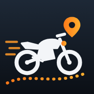

Ride Logger記録中は画面をつけたまま、アプリを表示した状態にしてください。
スマホホルダー＋充電がおすすめです。
スライドショーのBGMは毎回アプリが自動で作曲します。手持ちの曲（ファイルAppのmp3/m4aなど）も追加でき、ランダムの候補に入ります。Apple Musicの曲は使えません。
記録・写真・メモ・給油・曲をまとめて1つのファイルに保存します。「ファイル」Appに保存しておけば、入れ直しや機種変更のあとも復元できます。
平均速度は休憩を除いた走行中の平均です。
燃費は「満タン」給油の間に走った距離（このアプリの記録の合計）÷ 給油量で計算します。
走行中にカメラで撮った写真をまとめて選んでください。撮影時刻で今回の走行分だけを自動で取り込みます。